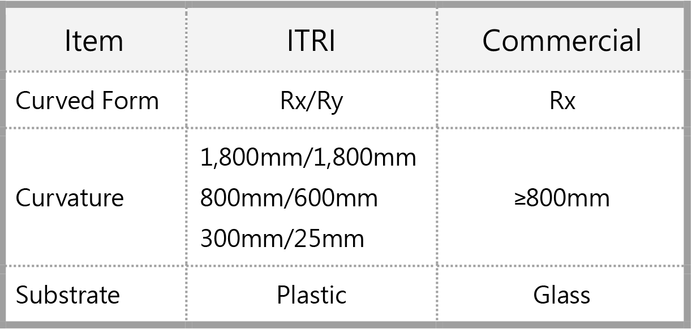

| 全球領先多維度貼合技術與應用 World Leading Multi-dimension Lamination Technology for Conformal Surface Applications |
| 工研院以任意形態設施建置成果為基礎，開發多維度貼合結構 設計與整合技術，驗證軟性電子元件貼合於雙軸曲載具(Rx/Ry) 並分別於 3 種不同曲率(1,800mm/ 1,800mm、 800mm/600mm 與 300mm/25mm)，達成光學貼合後無氣 泡、無皺褶成果，可呈現薄型化、輕量化與外觀多元化優勢， 未來可應用於智慧車艙之擋風玻璃顯示與多維度中控面板，及 一體化白色家電控制面板等。 To satisfy with future trend of free-form design look , ITRI has developed the multi-dimensional lamination structure and process integration technology for conformal surface applications based on free-form facility construction. The flexible electronic components has been verified for attaching to the optical grade acrylic carrier with the radius of Rx/Ry 1,800mm/1,800mm, Rx/Ry 800mm/600mm and Rx/Ry 300mm/25mm. This technology has the advantages of thinning, lightweight and diversified modeling. It can be applied to the wind shield display side window, central console control panel in smart cockpit, and interactive panel of white goods in future.  |
| 技術洽詢聯絡人：張凱銘 聯絡電話：(03)5912335 E-mail：itriA30142@itri.org.tw |